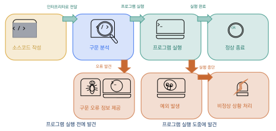
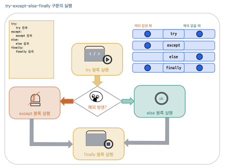
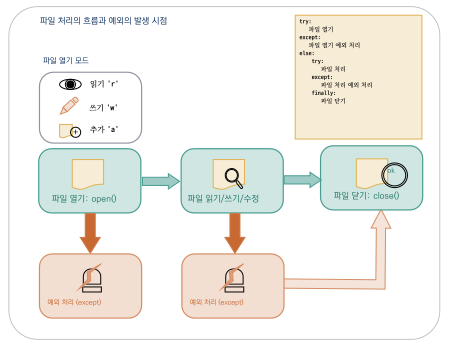

예외 처리와 파일
이 장을 마치면
try·except·else·finally구문으로 예외를 처리할 수 있다.- 구체적인 예외 유형을 구분하여 세밀하게 대응할 수 있다.
open()과with문으로 파일을 안전하게 읽고 쓸 수 있다.- 텍스트·CSV·JSON 등 다양한 형식의 파일을 다룰 수 있다.
이 장에서 배우는 예외 처리와 파일 입출력은 실전 프로그램의 필수 요소이다. 이후 만들게 될 단어장 앱은 JSON 파일로 데이터를 저장하고, 비정형 데이터 정리 프로젝트는 텍스트 파일을 읽어 CSV로 변환하며, 이 과정에서 잘못된 데이터 행을 건너뛰는 예외 처리가 핵심적인 역할을 한다.
소프트웨어는 대부분 인간이 만드는 것이므로 오류의 가능성을 항상 포함하고 있다. 컴퓨터를 사용하는 사람이라면 프로그램 상의 오류를 한번 이상 보았을 것이다. 만일 여러분들이 게임을 즐기는 도중에 오류가 나서 게임이나 서비스가 중지된다면 매우 불쾌한 감정을 느낄 것이다.
프로그래머가 아무리 주의를 기울여 코드를 작성하더라도 사용자가 예상치 못한 입력을 하거나, 파일이 존재하지 않거나, 네트워크가 끊기는 등의 예외 상황은 언제든지 발생할 수 있다. 중요한 것은 이러한 상황에서 프로그램이 갑자기 종료되지 않고 적절한 대응을 할 수 있도록 만드는 것이다. 이 장의 전반부에서는 파이썬의 예외 처리 메커니즘을 배워 안전하고 견고한 프로그램을 작성하는 방법을 익힌다.
한편, 프로그램에서 만들어진 데이터는 프로그램이 종료되면 사라진다. 데이터를 영구적으로 보관하려면 파일에 저장해야 한다. 이 장의 후반부에서는 파일을 열고 읽고 쓰는 방법을 배워 데이터를 영구적으로 저장하고 불러오는 기법을 학습한다. 예외 처리와 파일 입출력은 실무 프로그래밍에서 가장 자주 사용되는 기법이므로, 이 장의 내용을 충실히 익혀 두면 앞으로의 프로그래밍에 큰 도움이 될 것이다.
8.1 오류와 예외
이번 장에서는 파이썬의 예외 처리 방법에 대해 살펴보자. 소프트웨어는 대부분 인간이 만드는 것이므로 오류의 가능성을 항상 포함하고 있다. 프로그래밍 언어에서 말하는 오류error란 특정한 언어에서 정해 놓은 문법을 따르지 않는 명령이 입력되어 프로그램이 문제를 일으키는 것을 말하는데, 사소한 오류도 있을 수 있으나 때로는 치명적인 문제를 발생시키기도 한다. 파이썬에서 발생하는 오류는 크게 구문 오류syntax error와 예외exception로 나눌 수 있다.
구문 오류
구문 오류(문법 오류, 파싱 오류)는 파이썬의 정해진 문법을 지키지 않았을 때 발생한다.
예를 들어, 문자열에서 닫는 따옴표를 빼먹는다든가, if 문의 비교 후 콜론을 빼먹는 등의
파이썬 오류는 정해진 문법을 지키지 않았기 때문에 발생하므로 구문 오류, 문법 오류 혹은
파싱 오류parsing error라고 한다.
프로그램이 실행되기 전에 발견되므로, 코드를 수정해야 실행할 수 있다.
# 닫는 따옴표 누락 -- 구문 오류
print('Hello World!)
# SyntaxError: EOL while scanning string literal
# if 문 뒤에 콜론 누락
if True
print('hello')
# SyntaxError: expected ':'이러한 오류는 프로그래머가 프로그램 작성 시 볼 수 있는 흔한 오류로, 프로그램의 수행 전에 오류를 찾아서 미리 수정하는 것이 가능하다.
예외
그러나 문법적으로는 올바른 프로그램이 수행 도중 예상하지 못한 입력값이 들어오거나 비정상적 상황으로 인해 종료되는 경우도 있을 수 있다. 이러한 경우의 오류를 예외exception라고 지칭한다. 예를 들어 0으로 나누기, 존재하지 않는 인덱스 접근, 잘못된 자료형 변환 등이 해당된다.
일반적으로 프로그램을 실행하다 보면 문법적으로는 올바른 프로그램이
실행 중에 오류를 일으키는 경우가 있다.
다음 코드는 input() 함수를 사용하여 사용자로부터 두 정수를 입력 받아
나눗셈을 수행하는 프로그램이다.
코드상 어떠한 구문 오류도 없으며, 경우에 따라서는 잘 동작하지만,
두 번째 수를 0으로 입력하게 되면 다음과 같은 문제가 발생하게 된다.
a, b = input('Enter two numbers: ').split()
result = int(a) / int(b) # b가 0이면 ZeroDivisionError 발생!Enter two numbers: 10 0 ZeroDivisionError: division by zero
위 코드에서 사용자가 입력한 10과 0의 값을 받아 정수로 변환한 후 10 / 0과 같은 연산을 수행하면
오류가 발생하며 실행이 이루어지지 않는다.
이때 발생한 오류의 이름도 함께 나타나는데, 위의 코드에서는 ZeroDivisionError라는 오류가 발생하였다.
즉, 프로그램 수행 도중 0으로 나누려는 연산 오류가 발생했다는 의미이다.
이러한 정보는 파이썬 인터프리터interpreter에서 제공한다.
또한 사용자가 "사백 이백"과 같은 문자열 형식의 자료를 숫자로 바꾸는 경우에도 오류가 발생한다.
int() 함수를 이용하여 문자열 "사백"과 "이백"을 처리하는 경우
ValueError라는 오류 메시지를 출력한다.
a, b = input('Enter two numbers: ').split()
result = int(a) / int(b)Enter two numbers: 사백 이백 ValueError: invalid literal for int() with base 10: '사백'
개발자 입장에서 사용자로부터 입력을 받아 처리할 때 이와 같이 예상하지 못한 입력이
발생할 수 있다는 것을 항상 명심해야 한다.
이와 같이 구문상의 오류는 없으나 실행 도중에 만나게 되는 오류를
예외exception라고 부르며,
이 예외처리를 위해 사용하는 것이 try-except 문이다.
이러한 기능을 예외 처리exception handling라고 하는데,
except라는 예외 처리문이 예외를 유연하게 다룰 수 있다.
주요 예외 종류
프로그램에서 발생하는 오류에 대응하는 방법은 크게 두 가지 방향이 있다.
하나는 오류의 사전탐지detection이며,
다른 하나는 오류를 적절하게 다루는 방법handling이다.
예를 들어서 파일을 읽어들이는 open() 함수에서 존재하지 않는 파일을 읽으려고 하면
오류가 발생하는데, 이를 방지하기 위해서 이 파일이 존재하는가를 미리 검사하는
사전탐지 기법을 사용할 수 있다.
또 다른 경우는 파일이 존재하는 것을 확인하고 읽어 들이는 과정에서 이 파일의 형식이
잘못되거나 속성이 쓰기금지로 되어서 오류가 발생하는 불가피한 예외 상황이다.
파이썬의 예외처리는 이와 같이 예상하지 못한 오류에 대한 적절한 대응 방법을 사용자가 작성할 수 있는 기법이다.
파이썬에서 자주 만나는 예외의 종류는 표 8.1과 같다.
| 예외 | 발생 상황 |
|---|---|
ZeroDivisionError | 0으로 나누기를 시도한 경우 |
ValueError | 적절하지 않은 값을 사용한 경우 (int('abc')) |
IndexError | 리스트 인덱스가 범위를 벗어난 경우 |
TypeError | 지원되지 않는 자료형 연산 ('10' + 5) |
KeyError | 딕셔너리에 존재하지 않는 키를 사용한 경우 |
FileNotFoundError | 존재하지 않는 파일을 열려는 경우 |
NameError | 정의되지 않은 변수를 사용한 경우 |
AttributeError | 객체에 존재하지 않는 속성/메소드를 사용한 경우 |
예외가 발생하면 파이썬 인터프리터는 역추적traceback 정보를 출력하여 어디서 오류가 발생하였는지를 출력해 주고 프로그램을 종료시킨다. 이때 프로그램은 어디서 오류가 발생하였는가를 역추적하여 오류가 발생한 곳에서 오류의 종류를 출력한다. 이러한 역추적 정보는 프로그램 상의 문제를 살펴보는 데 매우 유용하다.

그림 8.1은 구문 오류와 예외가 발생하는 시점의 차이를 보여 준다. 구문 오류는 프로그램이 실행되기 전에 발견되지만, 예외는 실행 도중에 발생한다.
구문 오류는 문법 위반으로 실행 전에 발견되고, 예외는 문법적으로는 올바르지만 실행 도중에 발생하는 오류이다. 예외를 적절히 처리하면 프로그램이 갑자기 종료되는 것을 방지할 수 있다. 파이썬 인터프리터가 제공하는 역추적(traceback) 정보를 활용하면 오류의 원인을 빠르게 파악할 수 있다.
8.2 try-except 문
파이썬의 try-except 문은 오류가 발생할 수 있는 예외적인 상황을 유연하게 대처할 수 있는 좋은 방법이다.
이 구문은 다음 상자와 같은 문법을 가진다.
try-except 기본 문법
아래의 문법과 같이 try 절에는 실행되어 예외가 발생할 우려가 있는 코드를 입력한다.
이때 예외가 발생하지 않으면 except를 건너뛰며,
예외가 발생하면 오류를 확인하여 except의 매칭되는 부분으로 넘겨준다.
그리고 except 절에는 예외가 발생했을 때 처리할 내용을 담게 된다.
try:
{code that may raise an exception}
except [exception_type]:
{code to handle the exception}
앞 절에서 살펴본 코드를 try-except 구문을 이용하여 처리해보자.
try:
a, b = input('Enter two numbers: ').split()
result = int(a) / int(b)
print('{}/{} = {}'.format(a, b, result))
except:
print('Please check if the numbers are correct.')Enter two numbers: 10 0 Please check if the numbers are correct.
Enter two numbers: 사백 이백 Please check if the numbers are correct.
Enter two numbers: 50 2 50/2 = 25.0
위의 코드를 사용하면 try 내부에 있는 코드에 오류가 발생할 때 해당하는 오류에 맞는
except로 이동하는데, 위에서는 "수가 정확한지 확인하세요."라는 오류 메시지를 출력하는
코드가 실행된다.
이와 같이 try-except 문을 이용함으로써 프로그램은 급작스럽게 종료되지 않고
사용자에게 대처할 수 있는 방법을 제시할 수 있으며, 이전의 프로그램에 비해 안정적으로 작동하게 된다.
다중 except — 구체적인 예외를 명시하기
다음 코드는 예외가 발생할 경우 "수가 정확한지 확인하세요."와 같은 메시지를 출력하는데
구체적인 상황에 대한 처리를 위해서는 except 다음에 위에서 열거한 예외를 적어주는 것이 좋을 것이다.
그리고 구체적인 예외에 따라 대처하는 코드를 달리하여 적어 준다면 더 안전하고 효율적인 코딩이 될 것이다.
try:
b = 2 / 0
a = 1 + 'hundred'
except ZeroDivisionError:
print('Division by zero error')
except TypeError:
print('Unsupported operand type error')Division by zero error
위의 코드에서 try 블록 안에는 두 문장 모두 발생할 수 있는 오류를 안고 있는데,
먼저 실행되는 2 / 0 문장이 division by zero(0으로 나눔) 오류를 발생시켰다는 것을 확인할 수 있다.
만일 b = 2 / 0을 주석처리 한다면 a = 1 + 'hundred' 코드를 실행하게 되는데,
이 코드를 실행하면 지원되지 않은 연산자 +를 정수와 문자열 자료형에 적용함으로써 오류가 발생했다는
것을 알려준다.
만약에 어떤 예외 상황에 의해서 except가 실행되었는지를 상세히 알고 싶다면,
Exception as e라는 문법을 통해 Exception 변수 e를 선언해준다.
그리고 e 값을 출력하면 오류의 종류를 알 수 있게 된다.
try:
b = 2 / 0
a = 1 + 'hundred'
except Exception as e:
print('error :', e)error : division by zero
이와 같이 발생 가능한 구체적인 예외를 명시해 준 후, except XXX : 문에서 처리하게 된다면
더욱더 상세한 예외 처리가 가능할 것이다.
하지만 이러한 구체적인 예외 상황은 사전에 알기 힘들기 때문에
다음과 같이 except XXX :와 함께 except Exception as e:를 통해
보편적인 예외 처리 기능을 넣어 주는 것이 더 안전한 코딩이 될 것이다.
try:
# b = 2 / 0
a = 1 + 'hundred'
except ZeroDivisionError: # 0으로 나누기 예외 처리
print('Division by zero error')
except TypeError: # 지원되지 않는 자료형 연산 처리
print('Unsupported operand type error')
except Exception as e: # 그 밖의 모든 예외 처리
print('error :', e)
print('Please check division and operand types.')else 절
예외가 발생하는 상황과 함께 예외가 발생하지 않을 경우 필요한 코드를 알아보자.
예외가 발생하지 않을 경우 else 문을 사용하여 그 결과 값을 출력해 준다면 좋을 것이다.
else 절은 예외가 발생하지 않았을 때만 실행되는 블록이며,
반드시 모든 except 절 바로 다음에 위치해야 한다.
try:
a, b = input('Enter two numbers: ').split()
result = int(a) / int(b)
except ZeroDivisionError:
print('Error: cannot divide by zero.')
except ValueError:
print('Error: please enter integers.')
except:
print('Error: enter two numbers like 10 2.')
else: # 예외가 없을 때만 실행
print('{} / {} = {}'.format(a, b, result))이제 이 프로그램에 대해 다양한 입력을 하고 그 결과를 확인해 보자.
Enter two numbers: 20 0 Error: cannot divide by zero.
Enter two numbers: 이십 사십 Error: please enter integers.
Enter two numbers: 10 2 10 / 2 = 5.0
우선 나누는 수가 0인 입력 값을 사용해 보자.
이 경우 ZeroDivisionError 예외가 발생되므로 첫 번째 except 문에서 이 예외를 처리할 수 있다.
다음으로 입력 값을 한글로 입력해 보도록 하자.
결과와 같이 ValueError 예외가 발생되므로 두 번째 except 문에서 이 예외를 처리할 수 있다.
만일 10 2와 같은 정상적인 입력 값이 들어오면 프로그램은 else 문을 실행하여
정상적인 결과를 출력한다.
finally 절
다음으로 try-except-finally 문에 대해서 알아보자.
앞서 알아본 try와 except를 포함하여 else, finally에 대해서도
다음 표와 같이 그 기능을 정리할 수 있다.
| 이름 | 설명 |
|---|---|
try | 먼저 실행되어 예외가 발생하지 않으면 except를 건너뛰고, 예외가 발생하면 오류를 확인하여 except의 매칭되는 부분으로 넘겨준다. |
except | 예외가 발생했을 때 처리할 내용을 담는다. |
else | 예외가 발생하지 않을 때 실행되는 블록이다. |
finally | 예외의 발생 여부와 상관없이 항상 실행되는 블록이다. |
위의 표와 같이 except와 else의 차이는 예외의 발생 여부이다.
except 절은 예외가 발생했을 때 처리할 내용을 담고 있으며,
else 절은 예외가 발생하지 않을 때 실행되는 블록이다.
그리고 finally는 예외의 발생 여부와 상관없이 항상 실행된다.
이번에는 다음과 같이 divide()라는 함수를 사용하여 함수 내부에서 예외를 처리하도록 해 보았다.
def divide(x, y):
try:
result = x / y
except ZeroDivisionError:
print('Division by zero error')
else:
print('Result:', result)
finally:
print('Done')
print('divide(100, 2) call:')
divide(100, 2)
print('divide(100, 0) call:')
divide(100, 0)divide(100, 2) call: Result: 50.0 Done divide(100, 0) call: Division by zero error Done
divide() 함수에 인자 100과 2를 전달한 경우 예외가 발생하지 않기 때문에 결과를 출력하고
"Done" 메시지가 뜨는 것을 볼 수 있다.
반면 인자 100과 0을 전달한 경우 ZeroDivisionError가 발생하기 때문에
except로 넘어가서 "Division by zero error"이라는 메시지를 먼저 출력하게 된다.
finally에서 실행되는 "Done" 출력은 예외의 발생과 상관없이 매번 실행되는 것을 살펴볼 수 있다.
finally 문은 일반적으로 리소스를 open()한 후 이를 close()하는 경우에 많이 사용된다.

그림 8.2은 try-except-else-finally 구문의 실행 흐름을 보여 준다.
try 블록의 코드를 실행한 후 예외가 발생하면 except 블록으로,
예외가 발생하지 않으면 else 블록으로 이동한다.
어떤 경로를 거치든 마지막에는 반드시 finally 블록이 실행된 후 프로그램이 계속된다.
raise 문으로 예외 발생시키기
여러분이 만든 클래스나 함수에서도 많은 예외가 발생할 수 있다.
이 때 발생된 예외를 외부에 전달하고자 할 때 어떤 기능을 사용해야 할까?
파이썬에서는 raise 문을 이용하여 예외를 강제로 발생시킬 수가 있다.
즉, 파이썬에서 제공하는 예외가 발생하는 상황이 있는 경우 이외에도
사용자가 직접 raise를 이용하여 다양한 예외를 발생시킬 수 있다.
>>> raise Exception('Exception raised')
Traceback (most recent call last):
File "<stdin>", line 1, in <module>
raise Exception('Exception raised')
Exception: Exception raised
위의 코드에서 raise 문을 사용하여 Exception 객체 생성자를 호출하였으며,
문자열을 인자로 넣어 이 문자열을 출력값으로 나타낼 수 있다.
raise 문에 의해서 Exception이 발생되어 파이썬 인터프리터 프로그램이
그 과정을 추적(Traceback)하였다는 출력이 뜨며,
Exception 객체의 생성자에서 괄호 안에 넣어준 문자열이 예외의 메시지로 출력되는 것을 확인할 수 있다.
다음 예제는 사용자로부터 "예", "아니오" 중 하나의 입력을 받아서 정상적인 입력이면
"정상적인 입력입니다"를 출력하고 그렇지 않으면 "예/아니오를 입력하세요"라는
ValueError 오류를 반환하는 get_ans() 함수를 이용하는 코드이다.
def get_ans(ans):
if ans in ['yes', 'no']:
print('Valid input.')
else:
raise ValueError('Please enter yes or no.')
while True:
try:
ans = input('Enter yes or no: ')
get_ans(ans)
break
except Exception as e:
print('error:', e)Enter yes or no: maybe error: Please enter yes or no. Enter yes or no: nope error: Please enter yes or no. Enter yes or no: yes Valid input.
이 코드를 살펴보면 먼저 get_ans라고 하는 함수가 있고 아래에는
get_ans() 함수를 호출하는 while True:라는 무한 루프가 있다.
이 while 블록의 try 문 내에서는 input() 함수를 이용하여
사용자가 입력한 문자를 입력 받아 ans라는 이름으로 저장한 후,
이 ans를 get_ans() 함수에 전달하는 일을 한다.
다음으로 get_ans() 함수 내부를 살펴보면 함수 내부의 조건문에서는
입력된 ans가 리스트 ['yes', 'no'] 중 하나일 경우 "Valid input."를 출력한다.
그리고 나서 함수를 빠져나오면 break 문을 만나 무한 루프는 종료된다.
만일 get_ans() 함수에 전달되는 ans가 "yes" 혹은 "no"가 아닐 경우
이 함수는 else 문을 통해 ValueError라고 하는 Exception 객체를 생성하여 반환한다.
그러면 try 문의 except 구문이 실행되어 error를 출력한 후
while True에 의해 try 문은 다시 실행되는 구조를 가지고 있다.
이와 같이 raise는 사용자가 원하는 순간에 필요한 예외를 발생시킬 수 있는 기능이다.
try-except로 예외를 처리하면 프로그램의 비정상 종료를 방지할 수 있다.
except를 여러 개 나열하여 예외 종류에 따라 다른 처리를 할 수 있으며,
else는 예외가 없을 때, finally는 항상 실행된다.
raise로 예외를 직접 발생시켜 입력값 검증 등에 활용할 수 있다.
8.3 파일 입출력
여러분이 작업한 코드나 문서가 있다면 이 내용을 하드디스크와 같은 저장 장치에 저장해야만 다시 불러서 사용하는 것이 가능할 것이다. 이 절에서는 파이썬을 이용한 파일 입출력에 대해서 알아볼 것이다.
그 전에 우리는 다음과 같은 코드를 통해서 Hello World라는 문자열을 화면에 출력하는 방법을 배웠다.
이 출력된 문자를 hello.txt라는 이름의 파일로 만들어서 저장한다면
우리는 이 문자열을 다시 활용할 수 있을 것이다.
파일이란 무엇인가?
컴퓨터 파일file이란 컴퓨터의 저장 장치 내에 데이터를 저장하기 위해 사용하는 논리적인 단위를 말한다. 파일은 하드 디스크hard disk나 외장 디스크external disk 같은 저장 장치에 저장한 후 필요할 때 다시 불러서 사용하는 것이 가능하며, 필요에 따라서 수정하는 것도 가능하다. A라는 사용자가 "과제0423.hwp"라는 이름으로 한글 파일을 저장하고 며칠 후 다시 불러서 편집하거나 수정하는 일을 상상해 보면 될 것이다.
파일에는 여러 종류가 있으며, 일반적으로 마침표(.) 문자 뒤에
py, txt, doc, hwp, pdf와 같은 확장자를 붙여서 파일의 종류를 구분한다.
본 장에서는 .txt라는 확장자를 가지는 텍스트 파일을 읽어서 작업을 수행하는 방법에 대해서 알아보자.
파이썬을 비롯한 여러 프로그래밍에서는 파일을 사용하기 위하여 일반적으로 다음과 같은 3단계의 절차가 필요하다.

그림 8.3에서 보듯이, 파일 처리는 열기, 읽기/쓰기, 닫기의 세 단계를 거친다. 첫 번째 절차는 파일을 여는 것으로 저장 장치 내의 위치와 파일 이름을 지정해서 파일을 가져온다. 컴퓨터 저장 장치 내의 파일 위치는 경로path라고 한다. 두 번째 절차는 사용 목적에 따라서 사용하는 것으로 단순하게 읽어서 내용을 확인할 수도 있고 새로운 내용을 추가하거나 기존 내용을 삭제할 수 있다. 세 번째 절차는 파일을 닫는 절차이다. 파일을 사용하기 위해서는 메모리에 이 파일을 위한 저장 공간을 할당해야 하는데 파일을 모두 사용하고 나서 이 메모리를 시스템에서 사용할 수 있도록 반환하는 절차가 필요하다. 이 절차가 파일을 닫는 것이다.
파일 열기와 모드
open() 함수는 파일을 여는 역할을 한다.
첫 번째 인자로 파일 이름, 두 번째 인자로 파일 오픈 모드를 지정하여 가져온다.
| 모드 | 설명 |
|---|---|
'r' | 읽기 모드 (기본값). 파일이 없으면 오류 발생 |
'w' | 쓰기 모드. 파일이 없으면 새로 생성하고, 있으면 내용을 덮어씀 |
'a' | 추가 모드. 파일 끝에 내용을 추가함 |
'r+' | 읽기+쓰기 모드 |
파일 쓰기
write() 메소드를 이용하여 파일에 텍스트를 쓸 수 있다.
다음 코드를 통해 파일 쓰기의 기본적인 과정을 살펴보자.
f = open('hello.txt', 'w') # 1) 쓰기 모드로 파일 열기
f.write('Hello World!\n') # 2) 파일에 문자열 쓰기
f.write('Python file I/O\n')
f.close() # 3) 파일 닫기이 코드를 하나하나 살펴보자.
첫 줄의 open() 함수는 "hello.txt"라는 파일을 열어서 가져오는 역할을 하는데
"w"라는 파일 오픈 모드를 지정하여 가져온다.
이 모드는 파일을 쓰기 전용 모드로 여는데, 파일이 없을 경우 새로 파일을 생성한다.
open() 함수는 파일 객체를 반환하며, 파일 객체 f는 write() 메소드를 이용하여
지정된 형식으로 파일에 텍스트를 쓰는 일을 한다.
이 코드에서는 "Hello World!"라는 텍스트를 쓰게 된다.
다음 줄에 나타나는 f.close() 메소드는 파일을 닫는 일을 한다.
여러 줄을 한꺼번에 쓰려면 writelines() 메소드를 사용한다.
lines = ['First line\n', 'Second line\n', 'Third line\n']
f = open('lines.txt', 'w')
f.writelines(lines)
f.close()파일 읽기
파일을 읽을 때는 read(), readline(), readlines() 메소드를 사용한다.
각 메소드의 차이를 잘 이해하는 것이 중요하다.
read()는 파일 전체를 하나의 문자열로 읽어오고,
readline()은 한 줄씩 읽어오며,
readlines()는 모든 줄을 리스트로 반환한다.
# 파일 전체를 하나의 문자열로 읽기
f = open('hello.txt', 'r')
content = f.read()
print(content)
f.close()
# 한 번에 한 줄씩 읽기
f = open('hello.txt', 'r')
line1 = f.readline() # 첫 번째 줄
line2 = f.readline() # 두 번째 줄
print(line1, line2)
f.close()
# 모든 줄을 리스트로 읽기
f = open('hello.txt', 'r')
lines = f.readlines() # ['Hello World!\n', 'Python file I/O\n']
print(lines)
f.close()for 문을 이용하면 파일을 한 줄씩 편리하게 읽을 수 있다.
이 방식은 파일이 매우 큰 경우에도 메모리를 효율적으로 사용할 수 있어 실무에서 많이 활용된다.
f = open('hello.txt', 'r')
for line in f:
print(line, end='') # 줄바꿈 중복 방지
f.close()Hello World! Python file I/O
with 문을 이용한 안전한 파일 처리
파일을 사용한 후에는 반드시 close()를 호출해야 한다.
그러나 파일을 읽거나 쓰는 도중에 예외가 발생하면 close()가 실행되지 않을 수 있다.
이런 경우 메모리 누수나 데이터 손실이 발생할 수 있어 위험하다.
with 문을 사용하면 블록이 끝날 때 자동으로 파일이 닫히므로 더 안전하다.
마치 "이 블록 안에서만 파일을 사용하겠다"라고 선언하는 것과 같다.
with 블록을 벗어나면 예외가 발생하더라도 파이썬이 자동으로 파일을 닫아 준다.
# with 문으로 파일 쓰기
with open('data.txt', 'w') as f:
f.write('Name: Hong Gildong\n')
f.write('Age: 20\n')
f.write('Major: Computer Science\n')
# 블록이 끝나면 f.close()가 자동으로 호출됨
# with 문으로 파일 읽기
with open('data.txt', 'r') as f:
for line in f:
print(line, end='')Name: Hong Gildong Age: 20 Major: Computer Science
파일을 사용한 후 close()를 호출하지 않으면 데이터 손실이 발생할 수 있다.
with 문을 사용하면 이 문제를 예방할 수 있으므로, 가급적 with 문을 사용하는 것이 좋다.
실무에서는 open()/close() 대신 with 문을 사용하는 것이 거의 표준적인 관행이다.
pathlib — 현대적인 파일 경로 다루기
전통적으로 파이썬에서는 os.path.join(), os.path.exists() 같은 문자열 기반 함수로 파일 경로를 다뤘다. 파이썬 3.4부터 도입된 pathlib 모듈은 경로를 객체로 취급하여 훨씬 읽기 쉽고 일관된 API를 제공한다. 현대 파이썬 코드에서는 pathlib을 우선적으로 사용하도록 권장된다.
from pathlib import Path
p = Path('data') / 'scores.txt' # / 연산자로 경로 연결
print(p.exists()) # True/False
print(p.suffix) # '.txt'
print(p.stem) # 'scores'
print(p.parent) # PosixPath('data')
# 한 줄로 읽고 쓰기
p.write_text('hello', encoding='utf-8')
text = p.read_text(encoding='utf-8')pathlib의 Path 객체 사용하기Path 객체는 운영체제에 따라 PosixPath(macOS·Linux) 또는 WindowsPath로 자동으로 선택되므로, 경로 구분자(/, \)에 신경 쓸 필요가 없다. 디렉토리 생성(p.mkdir()), 반복(p.iterdir()), 확장자 변경(p.with_suffix('.csv')) 등 풍부한 메소드가 제공된다.
파일 입출력 활용 예제
다음은 학생 성적 데이터를 파일에 저장하고 읽어오는 예제이다. 이 예제를 통해 파일 쓰기와 읽기의 전체 흐름을 살펴보자.
# 성적 데이터를 파일에 저장
students = [
'Hong Gildong,85,90,78',
'Kim Cheolsu,92,88,95',
'Lee Younghee,76,82,89'
]
with open('scores.txt', 'w') as f:
for s in students:
f.write(s + '\n')
# 파일에서 성적을 읽어 평균 계산
with open('scores.txt', 'r') as f:
for line in f:
data = line.strip().split(',')
name = data[0]
scores = [int(x) for x in data[1:]]
avg = sum(scores) / len(scores)
print(f'{name}: Average {avg:.1f}')Hong Gildong: Average 84.3 Kim Cheolsu: Average 91.7 Lee Younghee: Average 82.3
이 프로그램은 먼저 학생들의 이름과 점수를 쉼표로 구분된 문자열로 만들어 파일에 저장한다.
그런 다음 파일을 읽어들여 각 줄을 쉼표로 분리하고, 점수 부분을 정수로 변환하여 평균을 계산한다.
strip() 메소드는 문자열 앞뒤의 공백이나 줄바꿈 문자를 제거하는 역할을 하며,
split(',')은 쉼표를 기준으로 문자열을 나누는 역할을 한다.
이처럼 파일 입출력은 데이터를 영구적으로 저장하고 나중에 다시 활용할 수 있게 해 주는 매우 중요한 기능이다. 앞에서 배운 예외 처리와 결합하면, 파일이 존재하지 않는 경우에도 프로그램이 안전하게 동작하도록 만들 수 있다.
try:
with open('nonexistent.txt', 'r') as f:
content = f.read()
except FileNotFoundError:
print('Error: File does not exist.')
except PermissionError:
print('Error: Permission denied.')Error: File does not exist.
위의 코드는 존재하지 않는 파일을 열려고 시도할 때 FileNotFoundError 예외를 처리하는 예제이다.
try-except와 with 문을 함께 사용하면 파일이 없는 경우에도 프로그램이 종료되지 않고
적절한 오류 메시지를 출력할 수 있다.
이것이 바로 예외 처리와 파일 입출력을 함께 배우는 이유이다.
한글이 포함된 텍스트 파일을 읽거나 쓸 때는 open() 함수에 encoding='utf-8'을 명시하는 것이 안전하다. 운영체제에 따라 기본 인코딩이 다를 수 있으므로, 인코딩을 지정하지 않으면 한글이 깨지거나 UnicodeDecodeError가 발생할 수 있다.
# 한글 텍스트 파일을 읽고 쓸 때는 인코딩을 지정
with open('korean.txt', 'w', encoding='utf-8') as f:
f.write('Hello World\n')open() 함수로 파일을 열고 read()/write()로 읽기/쓰기를 수행한 후 close()로 닫는다.
with 문을 사용하면 파일이 자동으로 닫혀 안전하다.
파일 모드는 'r'(읽기), 'w'(쓰기), 'a'(추가)가 있으며,
예외 처리와 결합하면 파일이 없거나 접근 권한이 없는 경우에도 안전하게 동작하는 프로그램을 만들 수 있다.
- 두 수를 입력받아 나눗셈 결과를 출력하되, 두 번째 수가 0이면
ZeroDivisionError를 잡아 "0으로 나눌 수 없습니다"를 출력하시오.a = int(input('a: ')) b = int(input('b: ')) try: print(f'{a} / {b} = {a / b}') except ZeroDivisionError: print('0으로 나눌 수 없습니다') - 사용자로부터 정수를 입력받아 제곱을 출력하시오. 잘못된 입력(숫자가 아닌 문자)이 들어오면
ValueError를 잡아 재입력을 받도록 한다.while True: try: n = int(input('Enter an integer: ')) break except ValueError: print('숫자만 입력하세요. 다시 시도하세요.') print(f'{n} ** 2 = {n * n}') with문으로message.txt파일을 열어 "Hello Python"을 쓰고, 다시 열어 그 내용을 출력하는 프로그램을 작성하시오.with open('message.txt', 'w', encoding='utf-8') as f: f.write('Hello Python\n') with open('message.txt', 'r', encoding='utf-8') as f: print(f.read())- 숫자 리스트
[10, 20, 30, 40, 50]을numbers.txt에 한 줄에 하나씩 저장한 뒤, 파일을 다시 읽어 합계를 출력하시오.nums = [10, 20, 30, 40, 50] with open('numbers.txt', 'w', encoding='utf-8') as f: for n in nums: f.write(f'{n}\n') total = 0 with open('numbers.txt', 'r', encoding='utf-8') as f: for line in f: total += int(line.strip()) print('Sum :', total) # 150 - 임의의 텍스트 파일의 경로를 인자로 받아 그 파일의 총 줄 수를 반환하는 함수
count_lines(path)를 작성하시오. 파일이 없으면FileNotFoundError를 잡아-1을 반환한다.def count_lines(path): try: with open(path, 'r', encoding='utf-8') as f: return sum(1 for _ in f) except FileNotFoundError: return -1 print(count_lines('numbers.txt')) print(count_lines('no_such_file.txt')) # -1 - 점수가 한 줄에 하나씩 저장된 파일
scores.txt를 읽어 평균을 구하시오. 단, 숫자가 아닌 줄이 섞여 있을 수 있으므로try-except로ValueError를 잡아 그 줄은 건너뛰고, 처리한 유효 점수의 개수와 평균을 출력하시오.with open('scores.txt', 'w', encoding='utf-8') as f: f.write('85\n92\nabc\n77\n90\n') # 숫자가 아닌 줄 하나 포함 total, count = 0, 0 with open('scores.txt', 'r', encoding='utf-8') as f: for line in f: try: total += int(line.strip()) count += 1 except ValueError: print('Skipped:', line.strip()) print(f'Valid: {count}, Avg: {total / count}')
- 파이썬에서 발생하는 오류는 크게 구문 오류(Syntax Error)와 예외(Exception)로 나뉜다. 구문 오류는 파이썬 문법을 지키지 않았을 때 발생하며, 프로그램이 실행되기 전에 발견된다.
- 예외는 문법적으로 올바르지만 실행 도중 발생하는 오류이다.
ZeroDivisionError(0으로 나누기),ValueError(부적절한 값),IndexError(범위 초과),TypeError(자료형 불일치),KeyError(없는 키),FileNotFoundError(없는 파일) 등이 있다. - 예외가 발생하면 파이썬 인터프리터는 역추적(traceback) 정보를 출력하여 오류의 위치와 종류를 알려 준다. 이 정보를 활용하면 오류의 원인을 빠르게 파악할 수 있다.
try-except문으로 예외를 처리하면 프로그램이 갑자기 종료되는 것을 방지하고, 사용자에게 적절한 안내 메시지를 제공할 수 있다.except뒤에 구체적인 예외 이름을 명시하면 예외 종류에 따라 서로 다른 처리를 할 수 있다.else절은 예외가 발생하지 않았을 때만 실행되며,finally절은 예외 발생 여부와 관계없이 항상 실행된다.finally는 파일 닫기 등 리소스 정리에 주로 사용된다.raise문을 이용하면 프로그래머가 의도적으로 예외를 발생시킬 수 있으며, 입력값 검증이나 사용자 정의 예외 처리에 활용된다.- 컴퓨터 파일은 저장 장치에 데이터를 보관하는 논리적 단위이며, 파일 사용은 열기(
open()) \(\rightarrow\) 읽기/쓰기 \(\rightarrow\) 닫기(close())의 3단계를 거친다. open()함수의 모드:'r'(읽기, 기본값),'w'(쓰기, 기존 내용 덮어씀),'a'(추가, 파일 끝에 덧붙임),'r+'(읽기+쓰기).- 파일 읽기 메소드:
read()(전체 읽기),readline()(한 줄 읽기),readlines()(모든 줄을 리스트로). 쓰기:write(),writelines(). with open(...) as f:구문을 사용하면 블록이 끝날 때 파일이 자동으로 닫히므로close()를 따로 호출할 필요가 없다. 이 방식이 가장 안전하고 권장된다.
8장 연습문제
- ★ 다음 코드는 각각 어떤 예외를 발생시키는가? 예외 이름을 적으시오.
a) print(10 / 0) b) int('hello') c) a = [1, 2, 3]; print(a[5]) d) '10' + 5 e) print(undefined_var) - ★★ 사용자로부터 두 정수를 입력받아 나눗셈을 수행하는 프로그램을 작성하시오.
try-except문을 사용하여ZeroDivisionError와ValueError를 각각 처리하고, 정상 입력 시else절에서 결과를 출력하며,finally절에서 "프로그램 종료"를 출력한다. - ★★★ 사용자로부터 이름, 국어, 영어, 수학 성적을 반복적으로 입력받아
students.txt파일에 저장하는 프로그램을 작성하시오. "끝"을 입력하면 입력을 종료한다. 저장 형식은 "이름,국어,영어,수학"이다. - ★★★ 위 3번 문제에서 저장한
students.txt파일을 읽어, 각 학생의 이름과 평균 점수를 출력하는 프로그램을 작성하시오. 파일이 존재하지 않을 경우FileNotFoundError를 처리하여 적절한 오류 메시지를 출력한다. - ★★★ 다음 기능을 가진 간단한 메모장 프로그램을
with문을 사용하여 작성하시오.- 1번: 메모 쓰기 — 사용자가 입력한 내용을
memo.txt에 추가 모드('a')로 저장 - 2번: 메모 읽기 —
memo.txt의 전체 내용을 화면에 출력 - 3번: 종료
- 1번: 메모 쓰기 — 사용자가 입력한 내용을
- ★ 구문 오류(Syntax Error)와 예외(Exception)의 차이점을 설명하고, 각각의 예시를 하나씩 드시오.
- ★★
raise문을 사용하여, 사용자로부터 양의 정수를 입력받아 음수가 입력되면ValueError를 발생시키는 프로그램을 작성하시오. - ★★★ 사용자 정의 예외 클래스
NegativeNumberError를 만들고, 사용자로부터 양의 정수를 입력받아 음수가 입력되면 이 예외를 발생시키는 프로그램을 작성하시오. - ★★ 텍스트 파일
source.txt의 내용을 읽어copy.txt에 복사하는 프로그램을with문을 사용하여 작성하시오.source.txt가 존재하지 않으면 적절한 오류 메시지를 출력하시오. - ★★★ 다음 데이터를
scores.csv파일에 저장하고, 다시 읽어서 각 학생의 이름과 평균 점수를 출력하는 프로그램을 작성하시오.Hong,85,90,78 Kim,92,88,95 Lee,76,82,80
- ★★ 다음 코드의 출력 결과를 쓰시오.
try: x = int('abc') except ValueError: print('A') except TypeError: print('B') else: print('C') finally: print('D') - ★★★
with문을 사용하여 사용자로부터 문장을 반복 입력받아diary.txt에 저장하는 프로그램을 작성하시오. "quit"을 입력하면 저장을 종료한다. 저장 완료 후 파일의 전체 내용과 총 줄 수를 출력하시오.